이번 주차에는 Observability에 대해 스터디가 진행되었습니다.
자원 모니터링 툴들의 적용 및 사용이 중심입니다.
그나저나 k8s 1.26에서 metrics의 일부 명칭이 바뀌는 걸 보고 식겁했습니다.
(etcd_db_total_size_bytes 대신, apiserver_storage_db_total_size_in_bytes 으로 변경)
또한 kubecost의 경우, cloudformation 스택 제거 후에도 볼륨 데이터가 남아있어서 별도로 삭제해야 했습니다.
1. 실습환경 배포
- NAT게이트웨이, EBS addon, IAM role, ISRA for LB/EFS, PreCommand 포함
- 노드: t3.xlarge
- t3a.xlarge(AMD)는 서울 리전 b AZ(ap-northeast-2b)에서 미지원
- 더 많은 값들이 입력되어서, 생성 완료까지 더 많은 시간이 소요 (약 20여분 이내)
curl -O https://s3.ap-northeast-2.amazonaws.com/cloudformation.cloudneta.net/K8S/eks-oneclick3.yaml
# 이하 생략, 3주차 참고
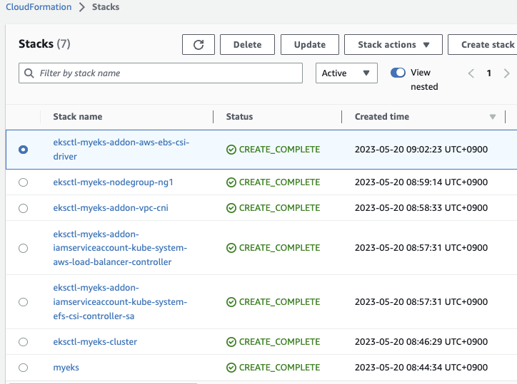
2. EKS Console
- 쿠버네티스 API를 통해서 리소스 및 정보 확인
kubectl get ClusterRole | grep eks
-
EKS Cluster에 대한 IAM Role 정보 확인: 연결 정책
-
웹 콘솔에서 다음과 같은 정보 확인 가능 (출처: EKS Workshop)
- Workloads, Cluster, Service&Networking, Config&Secret, Storage, Authentication, Authoriztion, Policy, Extensions
3. Logging in EKS
- 로깅 대상 구분
- Control Plane
- Node
- Application
3-1. Control Plane Logging
- 출처: EKS Docs
- 로그 그룹 이름:
/aws/eks/<cluster-name>/cluster - 로깅은 5가지가 지원
api: k8s API server component logsauditauthenticatorcontrollerManagerscheduler
- 로깅을 활성화 한 후에 확인
- 아래에서는 kube-controller-manager를 대상으로 coredns 레플리카 수를 조정하면서 로그를 확인
# 모든 로깅 활성화
aws eks update-cluster-config --region $AWS_DEFAULT_REGION --name $CLUSTER_NAME \
--logging '{"clusterLogging":[{"types":["api","audit","authenticator","controllerManager","scheduler"],"enabled":true}]}'
# 로그 그룹 확인
aws logs describe-log-groups | jq
# 로그 tail 확인
aws logs tail /aws/eks/$CLUSTER_NAME/cluster | more
# 시간 지정: 1초(s) 1분(m) 1시간(h) 하루(d) 한주(w) / 짧게 출력
aws logs tail /aws/eks/$CLUSTER_NAME/cluster --since 1h30m --format short
# 로그 스트림
kubectl scale deployment -n kube-system coredns --replicas=1
kubectl scale deployment -n kube-system coredns --replicas=2
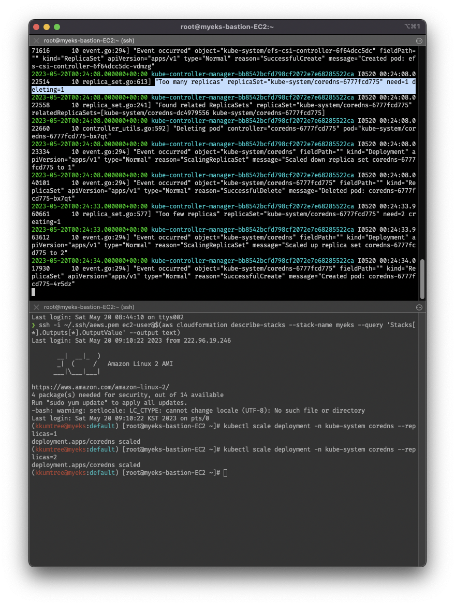
3-2. CloudWatch(이하, CW) Log Insights
- 웹 콘솔에서 로그 그룹을 대상으로 쿼리를 수행
# EC2 Instance가 NodeNotReady 상태인 로그 검색, 정상적인 경우 뜨지 않음
fields @timestamp, @message
| filter @message like /NodeNotReady/
| sort @timestamp desc
# kube-apiserver-audit 로그에서 userAgent 정렬하여 확인
# 앞서 활성화한 다른 로그(kube-scheduler, authenticator, kube-controller-Manager)도 확인 가능
fields userAgent, requestURI, @timestamp, @message
| filter @logStream ~= "kube-apiserver-audit"
| stats count(userAgent) as count by userAgent
| sort count desc
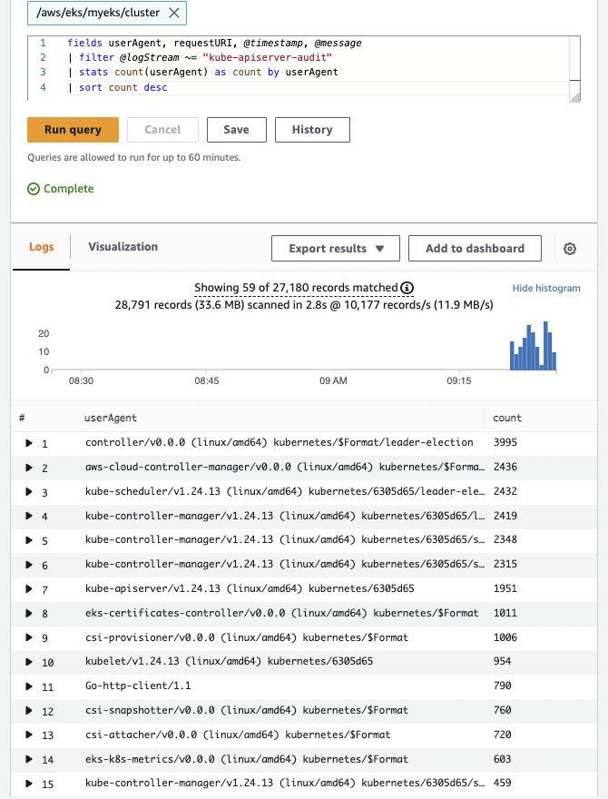
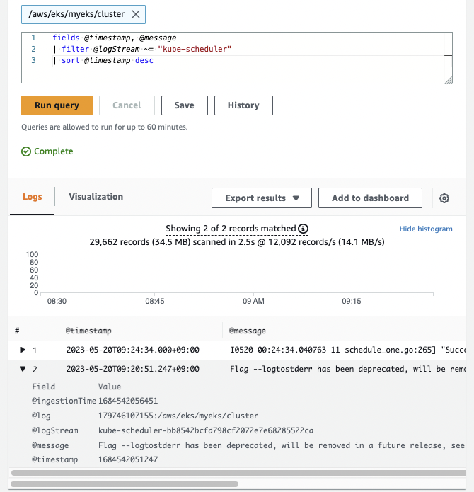
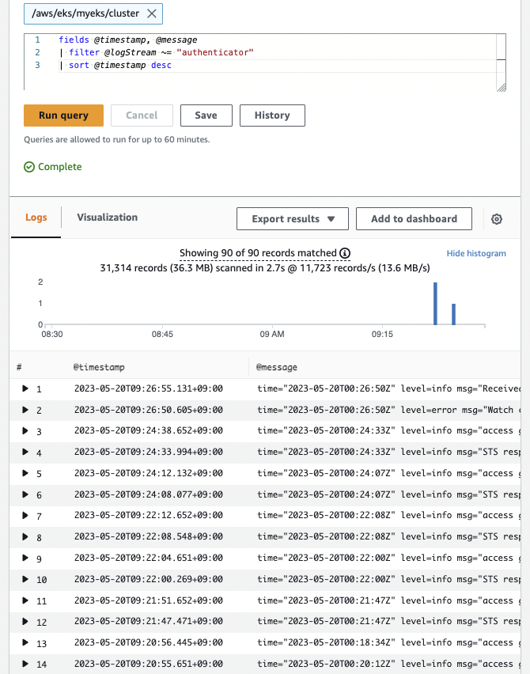
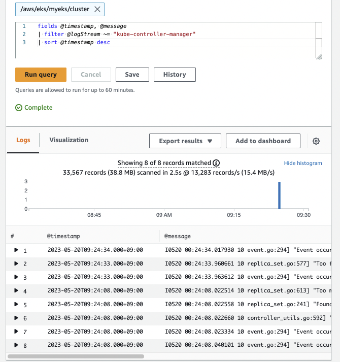
3-3. CW Log Insights Query with aws-cli
- 아래와 같이 cli로도 쿼리 가능
# CloudWatch Log Insight Query
aws logs get-query-results --query-id $(aws logs start-query \
--log-group-name '/aws/eks/myeks/cluster' \
--start-time `date -d "-1 hours" +%s` \
--end-time `date +%s` \
--query-string 'fields @timestamp, @message | filter @logStream ~= "kube-scheduler" | sort @timestamp desc' \
| jq --raw-output '.queryId')
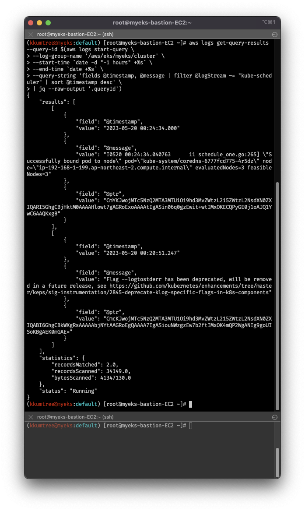
3-4. Control Plane raw metrics with CW Logs Insight
- 출처: EKS Docs
-
- 아래의 쿼리는 Prometheus 포맷으로 raw metrics 출력
metric_name{"tag"="value"[,...]} value
kubectl get --raw /metrics | more
3-5. Managing etcd database size on EKS clusters
- 출처: AWS Blog
- 아래와 같이 입력하면 etcd의 데이터베이스 사이즈를 확인 가능
- 이때 옆에 뜨는 엔드포인트는 etcd 서버의 엔드포인트. (참조: Github) 참고로, EKS에서는 etcd가 AWS-managed
- k8s v1.26 부터는
etcd_db_total_size_bytes대신,
apiserver_storage_db_total_size_in_bytes으로 변경 (참조: sysdig)
kubectl get --raw /metrics | grep "etcd_db_total_size_in_bytes"
# etcd_db_total_size_in_bytes{endpoint="http://10.0.160.16:2379"} 4.665344e+06
# etcd_db_total_size_in_bytes{endpoint="http://10.0.32.16:2379"} 4.636672e+06
# etcd_db_total_size_in_bytes{endpoint="http://10.0.96.16:2379"} 4.640768e+06
- CW Logs Insights Query for exceeded etcd database space
fields @timestamp, @message, @logStream
| filter @logStream like /kube-apiserver-audit/
| filter @message like /mvcc: database space exceeded/
| limit 10
- Identify what is consuming etcd database space
kubectl get --raw=/metrics | grep apiserver_storage_objects |awk '$2>50' |sort -g -k 2
# apiserver_storage_objects{resource="clusterrolebindings.rbac.authorization.k8s.io"} 78
# apiserver_storage_objects{resource="clusterroles.rbac.authorization.k8s.io"} 92
- CW Logs Insights Query for Request volume
# By userAgents
fields userAgent, requestURI, @timestamp, @message
| filter @logStream like /kube-apiserver-audit/
| stats count(*) as count by userAgent
| sort count desc
# By Requests by Universal Resource Identifier (URI)/Verb:
filter @logStream like /kube-apiserver-audit/
| stats count(*) as count by requestURI, verb, user.username
| sort count desc
# Object revision updates
fields requestURI
| filter @logStream like /kube-apiserver-audit/
| filter requestURI like /pods/
| filter verb like /patch/
| filter count > 8
| stats count(*) as count by requestURI, responseStatus.code
| filter responseStatus.code not like /500/
| sort count desc
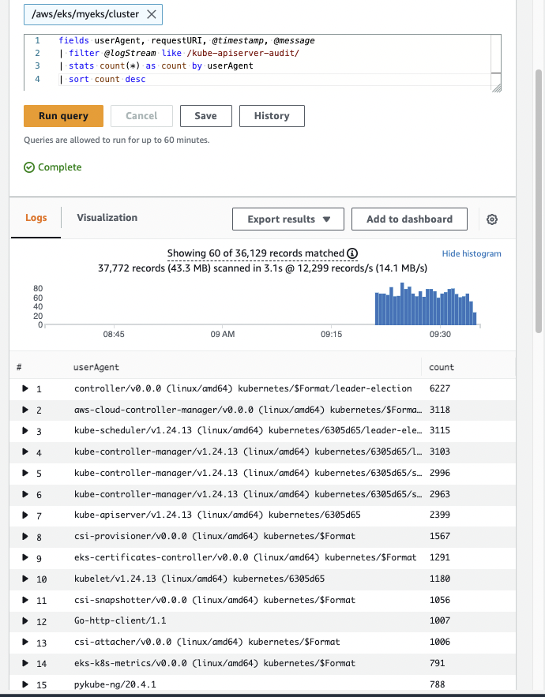
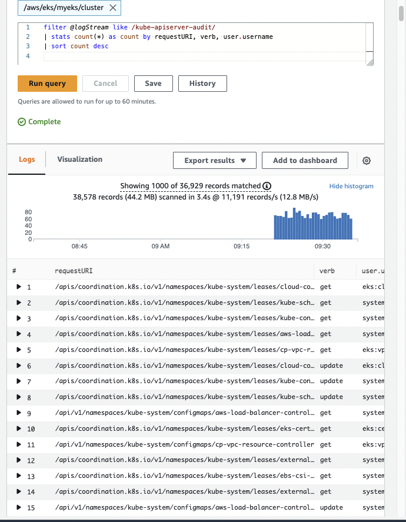
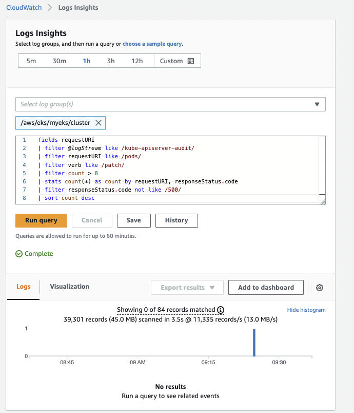
- 정확한 내용은 도입부의 AWS Blog 참고
3-6. 컨테이너(Pod) 로깅 with Nginx
- 아래와 같이 nginx를 배포하고, 반복 접속. 이어질 Prometheus와 Grafana 실습에서도 metric 자료로 활용
# NGINX 웹서버 배포
helm repo add bitnami https://charts.bitnami.com/bitnami
# 사용 리전의 인증서 ARN 확인
CERT_ARN=$(aws acm list-certificates --query 'CertificateSummaryList[].CertificateArn[]' --output text)
echo $CERT_ARN
# 도메인 확인
echo $MyDomain
# 파라미터 파일 생성
cat <<EOT > nginx-values.yaml
service:
type: NodePort
ingress:
enabled: true
ingressClassName: alb
hostname: nginx.$MyDomain
path: /*
annotations:
alb.ingress.kubernetes.io/scheme: internet-facing
alb.ingress.kubernetes.io/target-type: ip
alb.ingress.kubernetes.io/listen-ports: '[{"HTTPS":443}, {"HTTP":80}]'
alb.ingress.kubernetes.io/certificate-arn: $CERT_ARN
alb.ingress.kubernetes.io/success-codes: 200-399
alb.ingress.kubernetes.io/load-balancer-name: $CLUSTER_NAME-ingress-alb
alb.ingress.kubernetes.io/group.name: study
alb.ingress.kubernetes.io/ssl-redirect: '443'
EOT
cat nginx-values.yaml | yh
# 배포
helm install nginx bitnami/nginx --version 14.1.0 -f nginx-values.yaml
# 확인
kubectl get ingress,deploy,svc,ep nginx
kubectl get targetgroupbindings
# 접속 주소 확인 및 접속
echo -e "Nginx WebServer URL = https://nginx.$MyDomain"
curl -s https://nginx.$MyDomain
kubectl logs deploy/nginx -f
# 반복 접속
while true; do curl -s https://nginx.$MyDomain -I | head -n 1; date; sleep 1; done
# (참고) 삭제 시
helm uninstall nginx
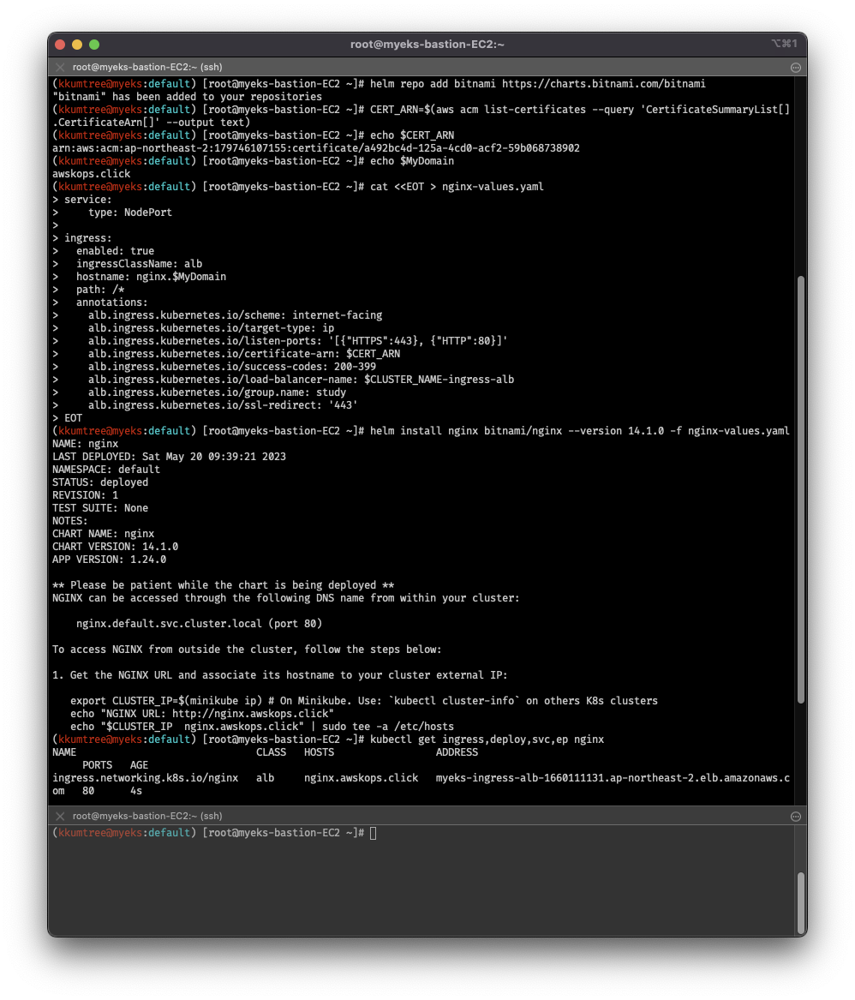
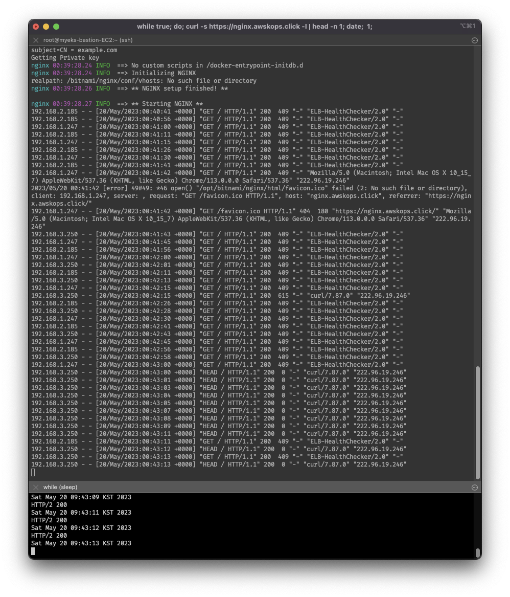
- 로그 모니터링 및 컨테이너 로그 파일 위치 확인
- 컨테이너의 로그는 표준 출력(stdout)과 표준 에러(stderr)로 나뉘어서 보내는 것이 권고사항 (참조: k8s Docs)
# 로그 모니터링
kubectl logs deploy/nginx -f
# nginx 웹 접속 시도 시 위의 모니터링에 실시간으로 확인 가능
# 컨테이너 로그 파일 위치 확인
kubectl exec -it deploy/nginx -- ls -l /opt/bitnami/nginx/logs/
# total 0
# lrwxrwxrwx 1 root root 11 Feb 18 13:35 access.log -> /dev/stdout
# lrwxrwxrwx 1 root root 11 Feb 18 13:35 error.log -> /dev/stderr
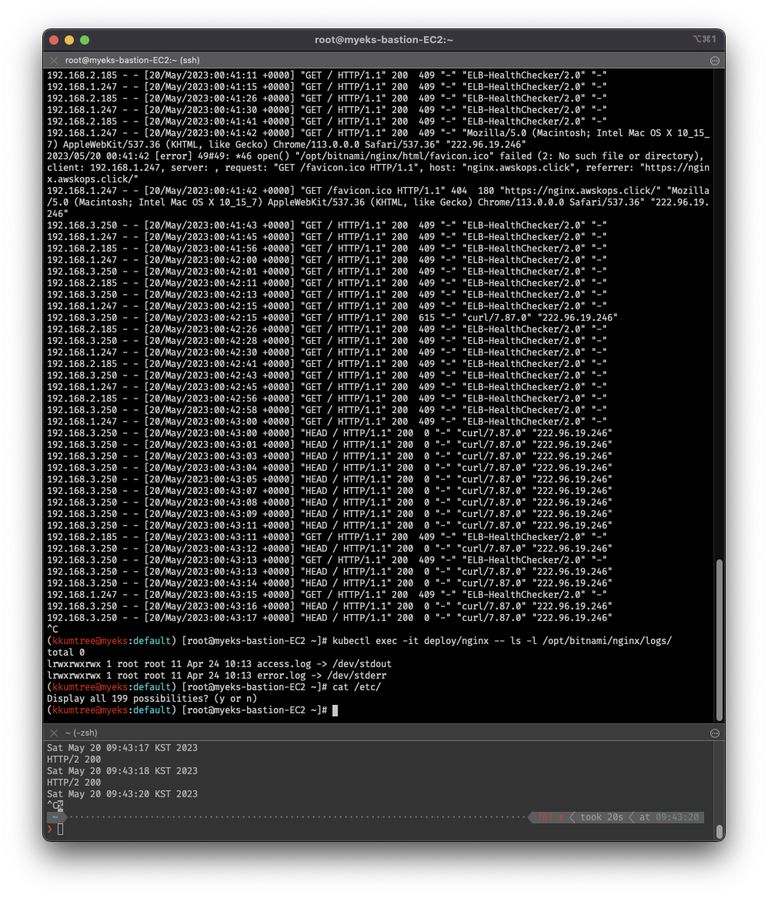
4. Fluent Bit integration in CCI(CW Container Insights) for EKS
- 출처: AWS Docs
- 노드에 CW Agent(Pod)는 Metrics 수집, Fluent Bit Pod는 Logs 수집을 위하여 데몬 셋으로 동작
- Fluent Bit은 Fluentd의 경량화 버전. config 설정에 차이가 있음 (참조: AWS Docs)
4-1. application 및 host 로그 소스 확인
- application 로그 소스: 각 컨테이너/파드 로그
/var/log/containers→ 심볼릭 링크/var/log/pods/<컨테이너>
- host 로그 소스: 노드(호스트) 로그
/var/log/dmesg,/var/log/secure,/var/log/messages
- dataplane 로그 소스: 쿠버네티스 데이터플레인 로그
/var/log/journalfor kubelet.service/kubeproxy.service/docker.service
# application 로그 위치 확인
for node in $N1 $N2 $N3; do echo ">>>>> $node <<<<<"; ssh ec2-user@$node sudo tree /var/log/containers; echo; done
for node in $N1 $N2 $N3; do echo ">>>>> $node <<<<<"; ssh ec2-user@$node sudo ls -al /var/log/containers; echo; done
# 개별 파드 로그 확인
ssh ec2-user@$N1 sudo tail -f /var/log/pods/default_nginx-<파드 고유 이름>/nginx/0.log
# host 로그 위치 확인
for node in $N1 $N2 $N3; do echo ">>>>> $node <<<<<"; ssh ec2-user@$node sudo tree /var/log/ -L 1; echo; done
for node in $N1 $N2 $N3; do echo ">>>>> $node <<<<<"; ssh ec2-user@$node sudo ls -la /var/log/; echo; done
# host 로그 확인
for log in dmesg secure messages; do echo ">>>>> Node1: /var/log/$log <<<<<"; ssh ec2-user@$N1 sudo tail /var/log/$log; echo; done
for log in dmesg secure messages; do echo ">>>>> Node2: /var/log/$log <<<<<"; ssh ec2-user@$N2 sudo tail /var/log/$log; echo; done
for log in dmesg secure messages; do echo ">>>>> Node3: /var/log/$log <<<<<"; ssh ec2-user@$N3 sudo tail /var/log/$log; echo; done
# dataplane 로그 위치 확인
for node in $N1 $N2 $N3; do echo ">>>>> $node <<<<<"; ssh ec2-user@$node sudo tree /var/log/journal -L 1; echo; done
# 저널 로그 확인 - 링크
ssh ec2-user@$N3 sudo journalctl -x -n 200
ssh ec2-user@$N3 sudo journalctl -f
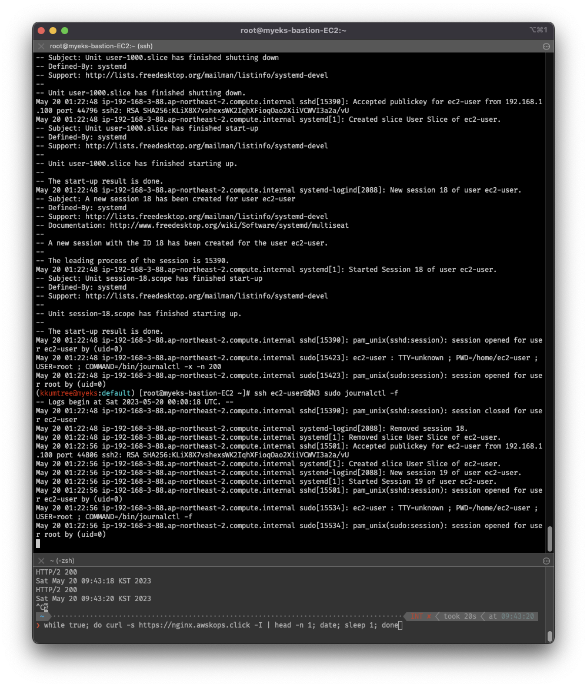
4-2. CCI(CW-agent 및 fluent-bit) 설치 및 Fluent Bit 설정
- 출처: AWS Docs
- CW-agent나 fluent-bit이나
HostPath에 수집된 정보를 저장하고 있음을 확인
# 설치
FluentBitHttpServer='On'
FluentBitHttpPort='2020'
FluentBitReadFromHead='Off'
FluentBitReadFromTail='On'
curl -s https://raw.githubusercontent.com/aws-samples/amazon-cloudwatch-container-insights/latest/k8s-deployment-manifest-templates/deployment-mode/daemonset/container-insights-monitoring/quickstart/cwagent-fluent-bit-quickstart.yaml | sed 's/{{cluster_name}}/'${CLUSTER_NAME}'/;s/{{region_name}}/'${AWS_DEFAULT_REGION}'/;s/{{http_server_toggle}}/"'${FluentBitHttpServer}'"/;s/{{http_server_port}}/"'${FluentBitHttpPort}'"/;s/{{read_from_head}}/"'${FluentBitReadFromHead}'"/;s/{{read_from_tail}}/"'${FluentBitReadFromTail}'"/' | kubectl apply -f -
# 설치 확인
kubectl get-all -n amazon-cloudwatch
kubectl get ds,pod,cm,sa -n amazon-cloudwatch
kubectl describe clusterrole cloudwatch-agent-role fluent-bit-role # 클러스터롤 확인
kubectl describe clusterrolebindings cloudwatch-agent-role-binding fluent-bit-role-binding # 클러스터롤 바인딩 확인
kubectl -n amazon-cloudwatch logs -l name=cloudwatch-agent -f # 파드 로그 확인
kubectl -n amazon-cloudwatch logs -l k8s-app=fluent-bit -f # 파드 로그 확인
for node in $N1 $N2 $N3; do echo ">>>>> $node <<<<<"; ssh ec2-user@$node sudo ss -tnlp | grep fluent-bit; echo; done
# cloudwatch-agent 설정 확인
kubectl describe cm cwagentconfig -n amazon-cloudwatch
{
"agent": {
"region": "ap-northeast-2"
},
"logs": {
"metrics_collected": {
"kubernetes": {
"cluster_name": "myeks",
"metrics_collection_interval": 60
}
},
"force_flush_interval": 5
}
}
# CW 파드가 수집하는 방법 : Volumes -> HostPath
# ssh ec2-user@$N1 sudo tree /dev/disk
kubectl describe -n amazon-cloudwatch ds cloudwatch-agent
# Fluent Bit Cluster Info 확인
kubectl get cm -n amazon-cloudwatch fluent-bit-cluster-info -o yaml | yh
apiVersion: v1
data:
cluster.name: myeks
http.port: "2020"
http.server: "On"
logs.region: ap-northeast-2
read.head: "Off"
read.tail: "On"
kind: ConfigMap
...
# Fluent Bit 로그 INPUT/FILTER/OUTPUT 설정 확인 - 링크
## 설정 부분 구성 : application-log.conf , dataplane-log.conf , fluent-bit.conf , host-log.conf , parsers.conf
kubectl describe cm fluent-bit-config -n amazon-cloudwatch
...
application-log.conf:
----
[INPUT]
Name tail
Tag application.*
Exclude_Path /var/log/containers/cloudwatch-agent*, /var/log/containers/fluent-bit*, /var/log/containers/aws-node*, /var/log/containers/kube-proxy*
Path /var/log/containers/*.log
multiline.parser docker, cri
DB /var/fluent-bit/state/flb_container.db
Mem_Buf_Limit 50MB
Skip_Long_Lines On
Refresh_Interval 10
Rotate_Wait 30
storage.type filesystem
Read_from_Head ${READ_FROM_HEAD}
[FILTER]
Name kubernetes
Match application.*
Kube_URL https://kubernetes.default.svc:443
Kube_Tag_Prefix application.var.log.containers.
Merge_Log On
Merge_Log_Key log_processed
K8S-Logging.Parser On
K8S-Logging.Exclude Off
Labels Off
Annotations Off
Use_Kubelet On
Kubelet_Port 10250
Buffer_Size 0
[OUTPUT]
Name cloudwatch_logs
Match application.*
region ${AWS_REGION}
log_group_name /aws/containerinsights/${CLUSTER_NAME}/application
log_stream_prefix ${HOST_NAME}-
auto_create_group true
extra_user_agent container-insights
...
# Fluent Bit 파드가 수집하는 방법 : Volumes -> HostPath
# ssh ec2-user@$N1 sudo tree /var/log
kubectl describe -n amazon-cloudwatch ds fluent-bit
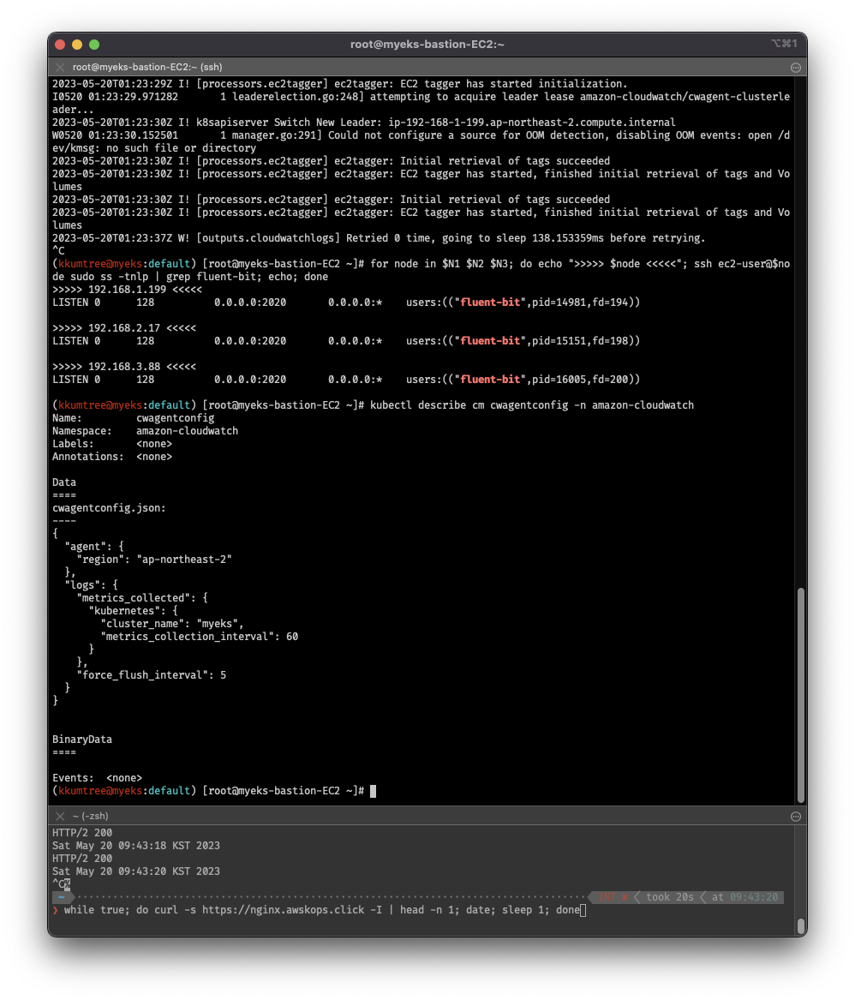
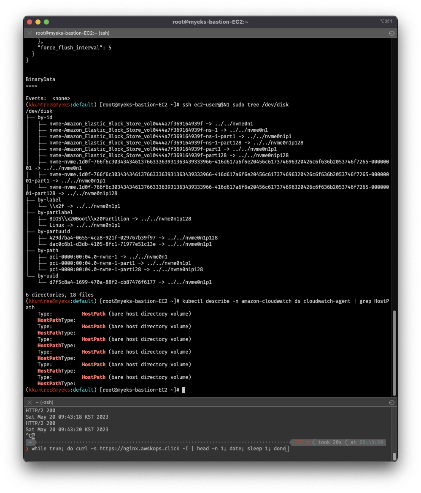
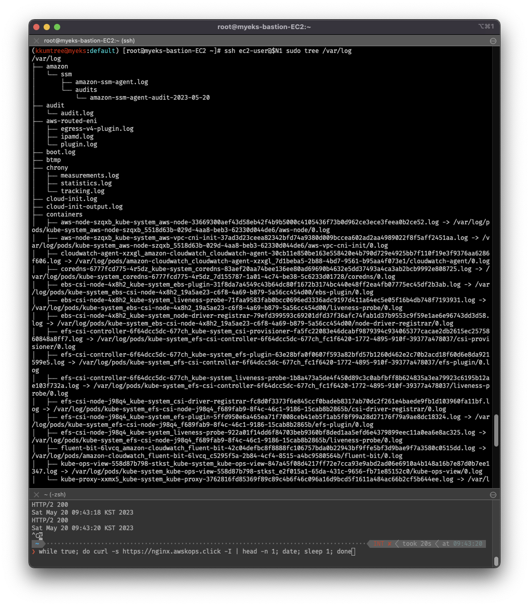
- 웹 콘솔에서도 Logs/Metrics 확인 가능
- Logs : CW -> Logs -> Log groups -> /aws/containerinsights/myeks/application
- NGINX 웹서버 부하 발생을 통한 로그 확인: Logs를 대상으로
nginx검색
- NGINX 웹서버 부하 발생을 통한 로그 확인: Logs를 대상으로
- Logs : CW -> Logs -> Log groups -> /aws/containerinsights/myeks/application
# 부하 발생
curl -s https://nginx.$MyDomain
yum install -y httpd
ab -c 500 -n 30000 https://nginx.$MyDomain/
# 파드 직접 로그 모니터링
kubectl logs deploy/nginx -f
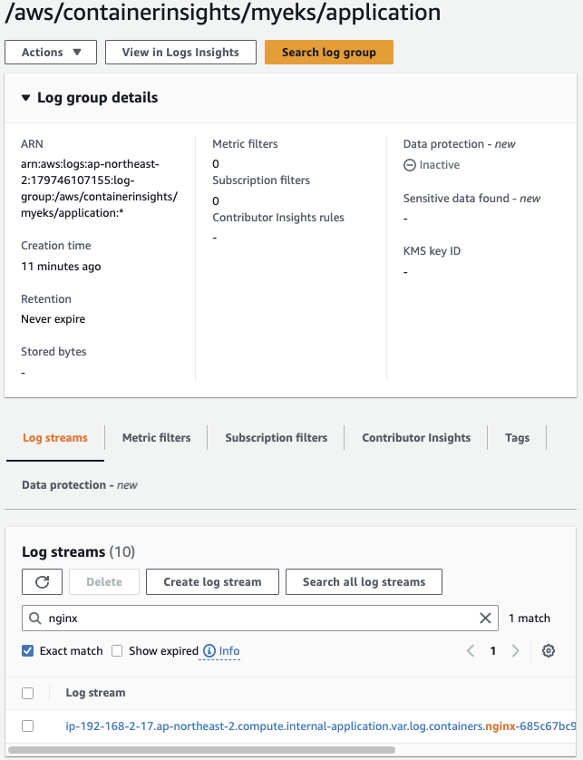
- Metrics : CloudWatch -> Insights -> ContainerInsights -> myeks
- Container map을 통한 시각화가 가능한데, 간격이 너무 벌어져서 있어 한번에 보기 불편
- 이외에도, 리소스 및 성능 모니터링을 지원
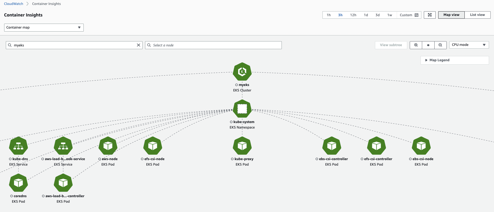
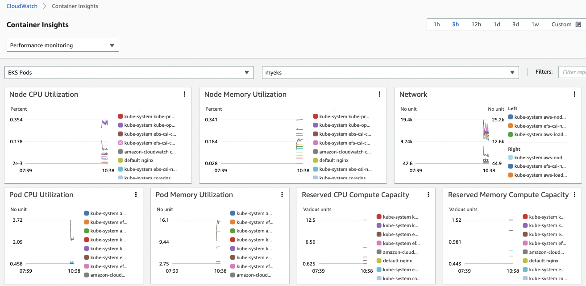
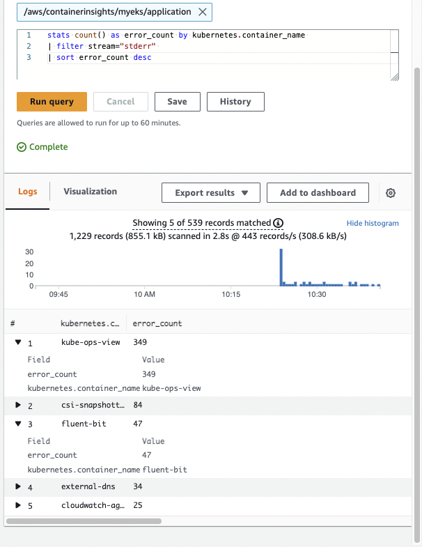
5. Metric-server / kwatch / botkube (addon tools)
- Metric-server: kubelet으로부터 수집한 리소스 metrics를 수집-집계하는 cluster addon
- kwatch: k8s 클러스터의 변화를 모니터링하여, Slack/Discord 등으로 알림을 보내주는 도구
- Slack 등에서 사용을 위해 Webhook 토큰 필요
- botkube: Slack/Discord 환경에서 Bot을 통해, 간단하게 k8s 명령어를 사용할 수 있는 도구
- 실습에서는 Slack API Bot/App 토큰 사용
################
## Metric-server
################
# 배포
kubectl apply -f https://github.com/kubernetes-sigs/metrics-server/releases/latest/download/components.yaml
# 메트릭 서버 확인 : 메트릭은 15초 간격으로 cAdvisor를 통하여 가져옴
kubectl get pod -n kube-system -l k8s-app=metrics-server
kubectl api-resources | grep metrics
kubectl get apiservices |egrep '(AVAILABLE|metrics)'
# 노드 메트릭 확인
kubectl top node
# 파드 메트릭 확인
kubectl top pod -A
kubectl top pod -n kube-system --sort-by='cpu'
kubectl top pod -n kube-system --sort-by='memory'
#########
## kwatch
#########
# configmap 생성
cat <<EOT > ~/kwatch-config.yaml
apiVersion: v1
kind: Namespace
metadata:
name: kwatch
---
apiVersion: v1
kind: ConfigMap
metadata:
name: kwatch
namespace: kwatch
data:
config.yaml: |
alert:
slack:
webhook: 'https://hooks.slack.com/services/<Webhook 토큰>'
title: $NICK-EKS
#text:
pvcMonitor:
enabled: true
interval: 5
threshold: 70
EOT
kubectl apply -f kwatch-config.yaml
# 배포
kubectl apply -f https://raw.githubusercontent.com/abahmed/kwatch/v0.8.3/deploy/deploy.yaml
## (장애 재현)잘못된 이미지를 배포하여, kwatch가 알림을 보내는지 확인
# 모니터링 준비
watch kubectl get pod
# 잘못된 이미지 정보의 파드 배포
kubectl apply -f https://raw.githubusercontent.com/junghoon2/kube-books/main/ch05/nginx-error-pod.yml
kubectl get events -w
# 이미지 업데이트 방안 : set 사용 - image 등 일부 리소스 값을 변경 가능!
# 업데이트 하였을 시, 에러 알림이 오지 않음
kubectl set
kubectl set image pod nginx-19 nginx-pod=nginx:1.19
# 삭제
kubectl delete pod nginx-19
##########
## botkube
##########
# repo 추가
helm repo add botkube https://charts.botkube.io
helm repo update
# 변수 지정
export SLACK_API_BOT_TOKEN=<Bot 토큰>
export SLACK_API_APP_TOKEN=<App 토큰>
export ALLOW_KUBECTL=true
export ALLOW_HELM=true
export SLACK_CHANNEL_NAME=webhook3
#
cat <<EOT > botkube-values.yaml
actions:
'describe-created-resource': # kubectl describe
enabled: true
'show-logs-on-error': # kubectl logs
enabled: true
executors:
k8s-default-tools:
botkube/helm:
enabled: true
botkube/kubectl:
enabled: true
EOT
# 설치
helm install --version v1.0.0 botkube --namespace botkube --create-namespace \
--set communications.default-group.socketSlack.enabled=true \
--set communications.default-group.socketSlack.channels.default.name=${SLACK_CHANNEL_NAME} \
--set communications.default-group.socketSlack.appToken=${SLACK_API_APP_TOKEN} \
--set communications.default-group.socketSlack.botToken=${SLACK_API_BOT_TOKEN} \
--set settings.clusterName=${CLUSTER_NAME} \
--set 'executors.k8s-default-tools.botkube/kubectl.enabled'=${ALLOW_KUBECTL} \
--set 'executors.k8s-default-tools.botkube/helm.enabled'=${ALLOW_HELM} \
-f botkube-values.yaml botkube/botkube
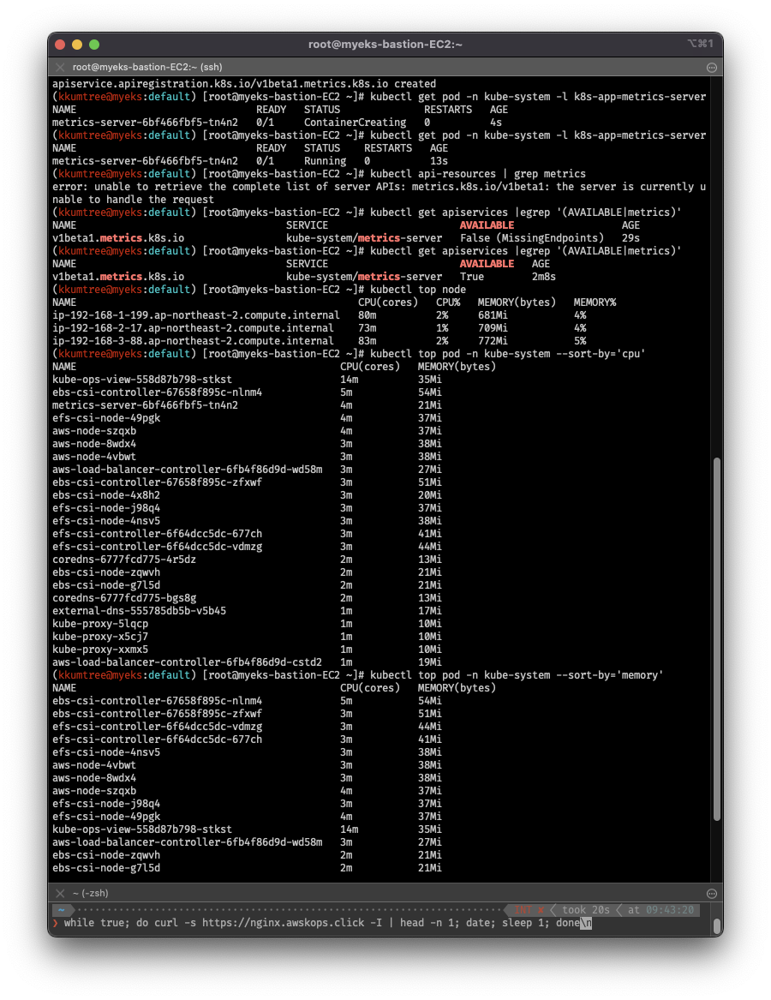
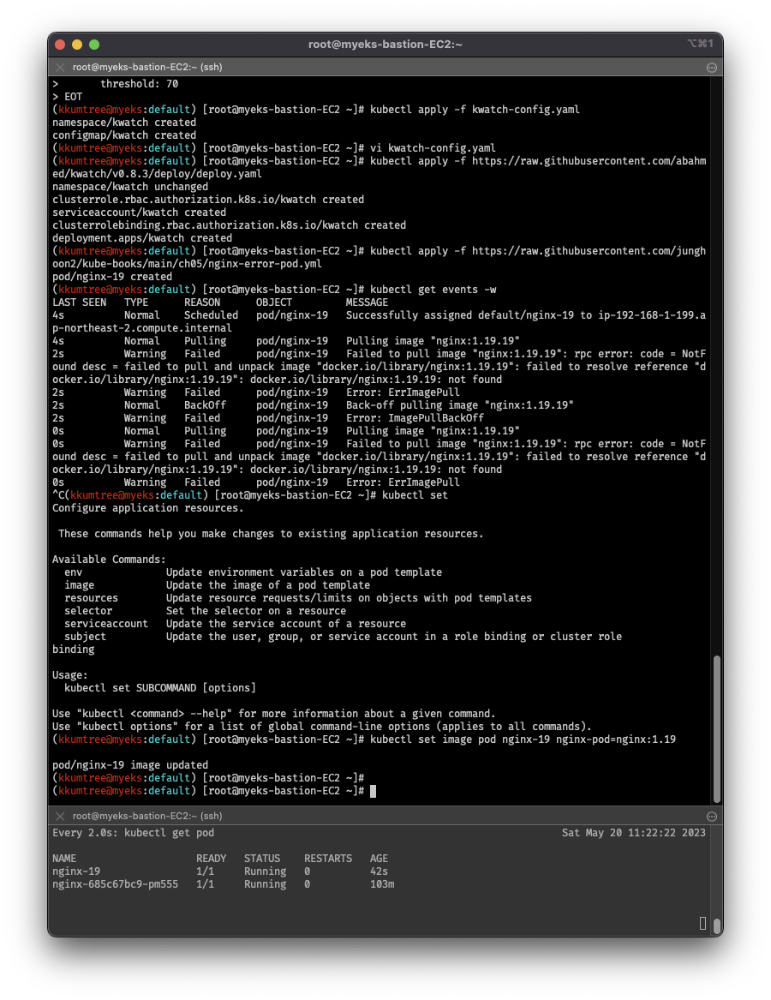
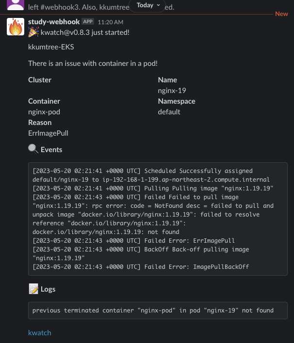
# Slack에서 botkube 앱을 추가하고, 채널에 초대
# 연결 상태, notifications 상태 확인
@Botkube ping
@Botkube status notifications
# 잘못된 이미지 정보의 파드 배포 후 파드 정보 조회
# kubectl apply -f https://raw.githubusercontent.com/junghoon2/kube-books/main/ch05/nginx-error-pod.yml
# kubectl get events -w
@Botkube k get pod
@Botkube kc get pod --namespace kube-system
@Botkube kubectl get pod --namespace kube-system -o wide
# Actionable notifications: 드롭다운을 통해 명령어 선택 가능
@Botkube kubectl
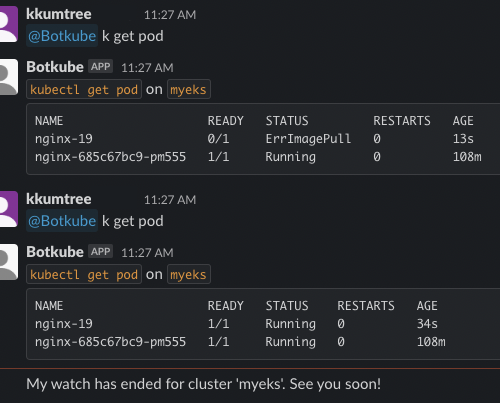
6. Prometheus 스택
- Prometheus 및 Grafana를 단일 스택으로 설치
- 실습에서는 ACM, Route53, ALB를 연동하여 HTTPS 리디렉션을 적용
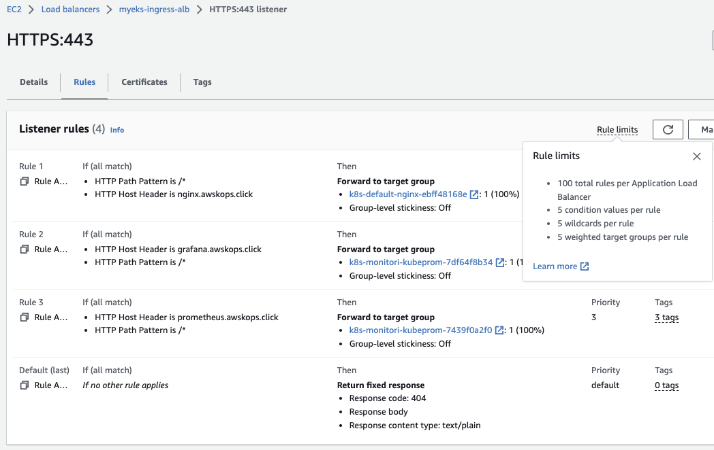
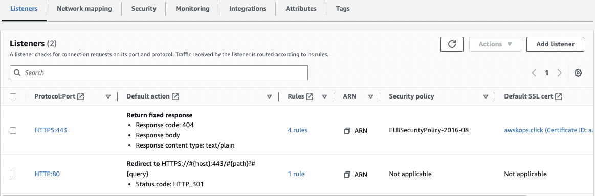
6-1. Prometheus 스택 설치
alertmanager-0:- 고질적인 firing 에러(?)로 이번 실습에서는 skip
- 사전에 정의한 정책 기반(예: 노드 다운, 파드 Pending 등)으로 시스템 경고 메시지를 생성 후 경보 채널(슬랙 등)로 전송
- grafana:
프로메테우스는 메트릭 정보를 저장하는 용도로 사용하며, 그라파나로 시각화 처리 - prometheus-0:
모니터링 대상이 되는 파드는 ‘exporter’라는 별도의 사이드카 형식의 파드에서 모니터링 메트릭을 노출, pull 방식으로 가져와 내부의 시계열 데이터베이스에 저장 - node-exporter:
노드익스포터는 물리 노드에 대한 자원 사용량(네트워크, 스토리지 등 전체) 정보를 메트릭 형태로 변경하여 노출 - operator:
시스템 경고 메시지 정책(prometheus rule), 애플리케이션 모니터링 대상 추가 등의 작업을 편리하게 할수 있게 CRD 지원 - kube-state-metrics:
쿠버네티스의 클러스터의 상태(kube-state)를 메트릭으로 변환하는 파드
# 모니터링
kubectl create ns monitoring
watch kubectl get pod,pvc,svc,ingress -n monitoring
# 사용 리전의 인증서 ARN 확인
CERT_ARN=`aws acm list-certificates --query 'CertificateSummaryList[].CertificateArn[]' --output text`
echo $CERT_ARN
# repo 추가
helm repo add prometheus-community https://prometheus-community.github.io/helm-charts
# 파라미터 파일 생성
cat <<EOT > monitor-values.yaml
prometheus:
prometheusSpec:
podMonitorSelectorNilUsesHelmValues: false
serviceMonitorSelectorNilUsesHelmValues: false
retention: 5d
retentionSize: "10GiB"
ingress:
enabled: true
ingressClassName: alb
hosts:
- prometheus.$MyDomain
paths:
- /*
annotations:
alb.ingress.kubernetes.io/scheme: internet-facing
alb.ingress.kubernetes.io/target-type: ip
alb.ingress.kubernetes.io/listen-ports: '[{"HTTPS":443}, {"HTTP":80}]'
alb.ingress.kubernetes.io/certificate-arn: $CERT_ARN
alb.ingress.kubernetes.io/success-codes: 200-399
alb.ingress.kubernetes.io/load-balancer-name: myeks-ingress-alb
alb.ingress.kubernetes.io/group.name: study
alb.ingress.kubernetes.io/ssl-redirect: '443'
grafana:
defaultDashboardsTimezone: Asia/Seoul
adminPassword: prom-operator
ingress:
enabled: true
ingressClassName: alb
hosts:
- grafana.$MyDomain
paths:
- /*
annotations:
alb.ingress.kubernetes.io/scheme: internet-facing
alb.ingress.kubernetes.io/target-type: ip
alb.ingress.kubernetes.io/listen-ports: '[{"HTTPS":443}, {"HTTP":80}]'
alb.ingress.kubernetes.io/certificate-arn: $CERT_ARN
alb.ingress.kubernetes.io/success-codes: 200-399
alb.ingress.kubernetes.io/load-balancer-name: myeks-ingress-alb
alb.ingress.kubernetes.io/group.name: study
alb.ingress.kubernetes.io/ssl-redirect: '443'
defaultRules:
create: false
kubeControllerManager:
enabled: false
kubeEtcd:
enabled: false
kubeScheduler:
enabled: false
alertmanager:
enabled: false
# alertmanager:
# ingress:
# enabled: true
# ingressClassName: alb
# hosts:
# - alertmanager.$MyDomain
# paths:
# - /*
# annotations:
# alb.ingress.kubernetes.io/scheme: internet-facing
# alb.ingress.kubernetes.io/target-type: ip
# alb.ingress.kubernetes.io/listen-ports: '[{"HTTPS":443}, {"HTTP":80}]'
# alb.ingress.kubernetes.io/certificate-arn: $CERT_ARN
# alb.ingress.kubernetes.io/success-codes: 200-399
# alb.ingress.kubernetes.io/load-balancer-name: myeks-ingress-alb
# alb.ingress.kubernetes.io/group.name: study
# alb.ingress.kubernetes.io/ssl-redirect: '443'
EOT
cat monitor-values.yaml | yh
# 배포
helm install kube-prometheus-stack prometheus-community/kube-prometheus-stack --version 45.27.2 \
--set prometheus.prometheusSpec.scrapeInterval='15s' --set prometheus.prometheusSpec.evaluationInterval='15s' \
-f monitor-values.yaml --namespace monitoring
# 확인
helm list -n monitoring
kubectl get pod,svc,ingress -n monitoring
kubectl get-all -n monitoring
kubectl get prometheus,servicemonitors -n monitoring
kubectl get crd | grep monitoring
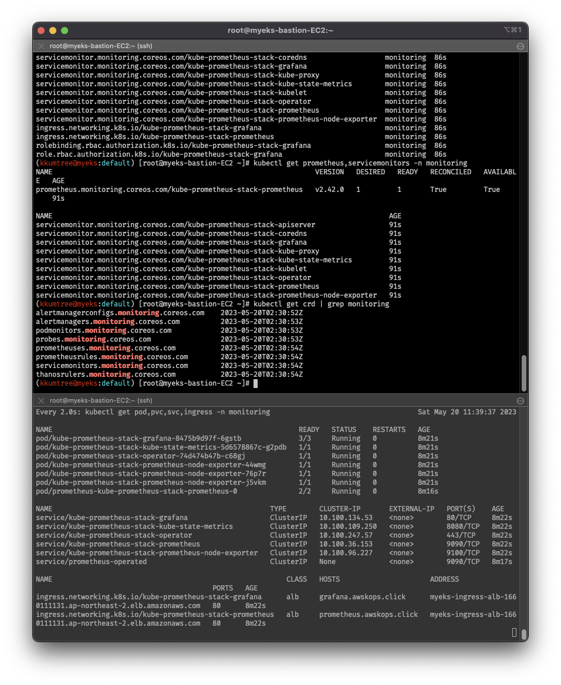
6-2. Prometheus 기본적 사용
- 모니터링 대상인 서비스는 3에서 다루었듯이 /metrics 엔드포인트가 노출되어있음
- p8s는 http get 방식으로 metrics를 가져와 TSDB 형식으로 저장
# 아래 처럼 프로메테우스가 각 서비스의 9100 접속하여 메트릭 정보를 수집
kubectl get node -owide
kubectl get svc,ep -n monitoring kube-prometheus-stack-prometheus-node-exporter
# 노드의 9100번의 /metrics 접속 시 다양한 메트릭 정보를 확인할수 있음 : 마스터 이외에 워커노드도 확인 가능
ssh ec2-user@$N1 curl -s localhost:9100/metrics
# ingress 확인
kubectl get ingress -n monitoring kube-prometheus-stack-prometheus
kubectl describe ingress -n monitoring kube-prometheus-stack-prometheus
# 프로메테우스 ingress 도메인으로 웹 접속
echo -e "Prometheus Web URL = https://prometheus.$MyDomain"
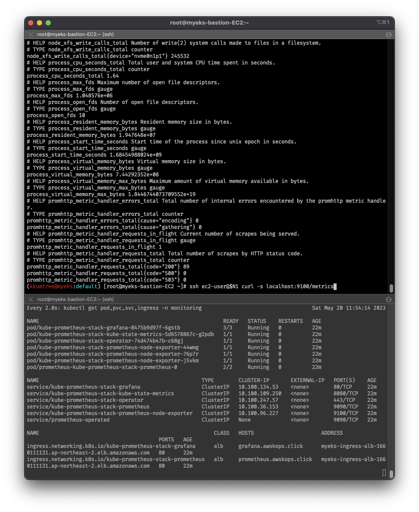
- 프로메테우스 ingress 도메인으로 웹 접속
- 경고(Alert) : 사전에 정의한 시스템 경고 정책(Prometheus Rules)에 대한 상황
- 그래프(Graph) : 프로메테우스 자체 검색 언어 PromQL을 이용하여 메트릭 정보를 조회 -> 단순한 그래프 형태 조회
- 상태(Status) : 경고 메시지 정책(Rules), 모니터링 대상(Targets) 등 다양한 프로메테우스 설정 내역을 확인 > 버전(2.42.0)
- 도움말(Help)
- 프로메테우스 설정(Configuration) 확인:
- Status → Runtime & Build Information ⇒ Storage retention
- 5d or 10GiB: 메트릭 저장 기간이 5일 경과 혹은 10GiB 이상 시 삭제
- helm 파라미터에서 수정 후 적용 가능
- Status → Command-Line Flags 에서도 확인 가능
- –storage.tsdb.retention.time=5d
- –storage.tsdb.retention.size=10GB
- Status → Configuration ⇒ “node-exporter” 검색
metrics_path: /metrics, scheme: http,role: endpoints를 확인
- Status → Runtime & Build Information ⇒ Storage retention
- 전체 metrics targets(대상) 확인:
- Status → Targets
- 각 엔드포인트 확인 가능
- 메트릭을 그래프(Graph)로 조회:
- Graph
- 아래 PromQL 쿼리(전체 클러스터 노드의 CPU 사용량 합계)입력 후 조회 → Graph 확인
1- avg(rate(node_cpu_seconds_total{mode="idle"}[1m]))입력
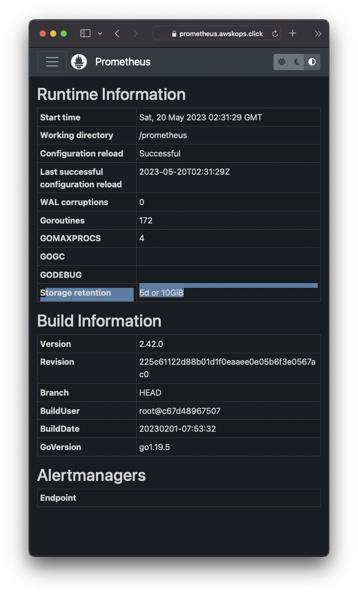
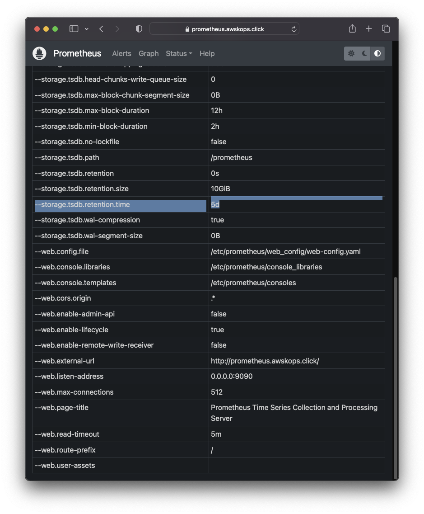
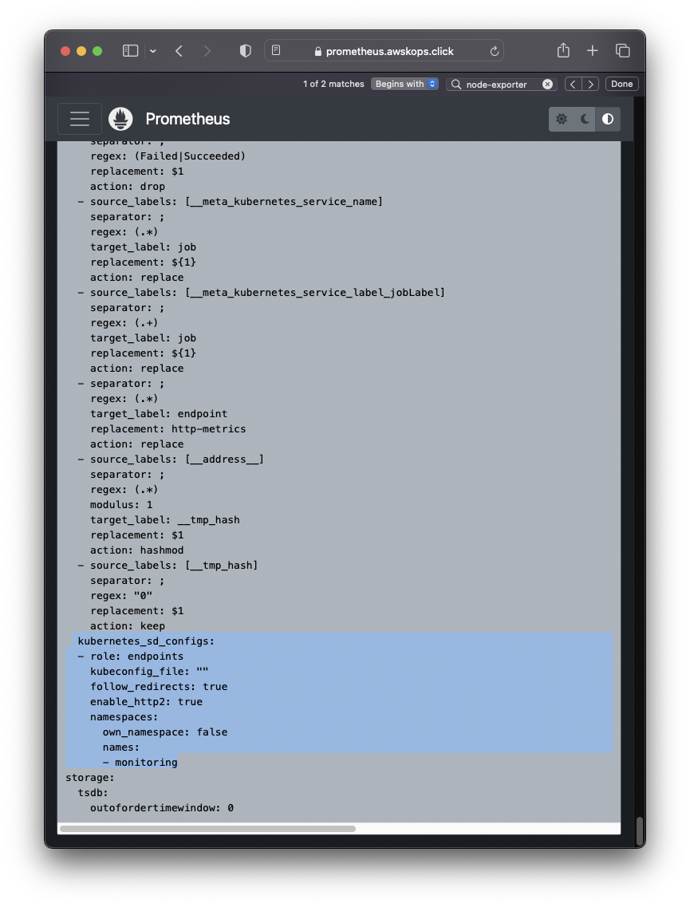
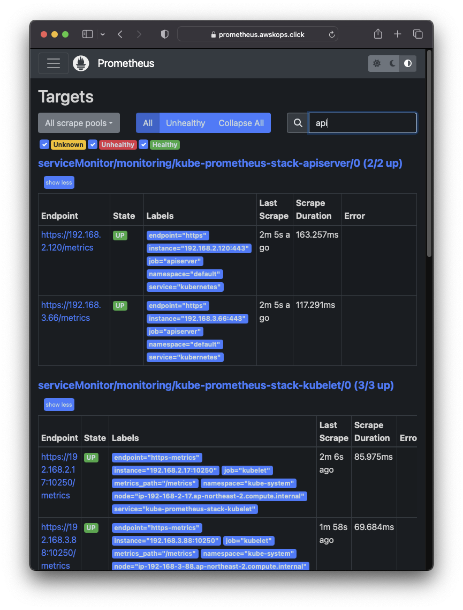
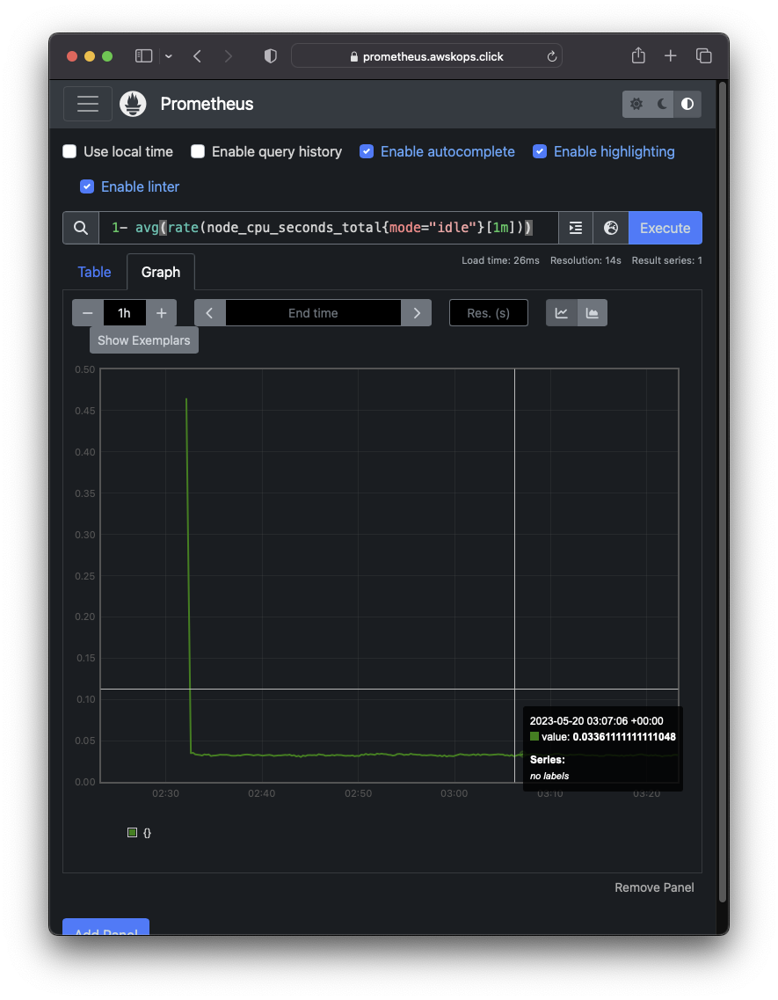
6-3. Grafana
- TSDB 데이터를 시각화하는 대시보드 제공
- 접속 정보 확인 및 로그인: 초기 계정 - admin / prom-operator
- 설치한 스택에서는 자동으로 프로메테우스를 데이터 소스로 추가해둠
http://kube-prometheus-stack-prometheus.monitoring:9090/
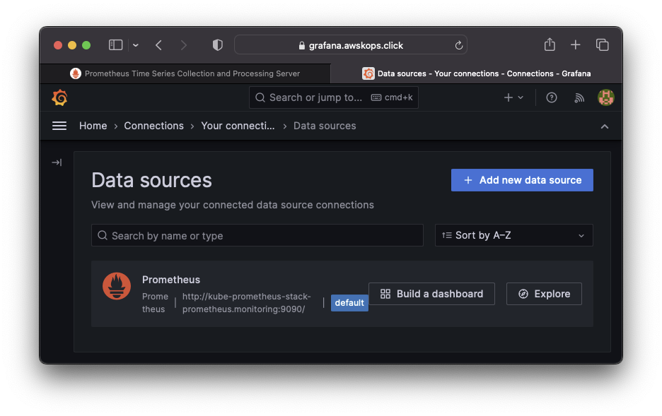
# 그라파나 버전 확인
kubectl exec -it -n monitoring deploy/kube-prometheus-stack-grafana -- grafana-cli --version
# ingress 확인
kubectl get ingress -n monitoring kube-prometheus-stack-grafana
kubectl describe ingress -n monitoring kube-prometheus-stack-grafana
# ingress 도메인으로 웹 접속 : 기본 계정 - admin / prom-operator
echo -e "Grafana Web URL = https://grafana.$MyDomain"
## 데이터 소스 접속 확인
# 테스트용 파드 배포
cat <<EOF | kubectl create -f -
apiVersion: v1
kind: Pod
metadata:
name: netshoot-pod
spec:
containers:
- name: netshoot-pod
image: nicolaka/netshoot
command: ["tail"]
args: ["-f", "/dev/null"]
terminationGracePeriodSeconds: 0
EOF
kubectl get pod netshoot-pod
# 접속 확인
kubectl exec -it netshoot-pod -- nslookup kube-prometheus-stack-prometheus.monitoring
kubectl exec -it netshoot-pod -- curl -s kube-prometheus-stack-prometheus.monitoring:9090/graph -v ; echo

6-4. Grafana 대시보드 import
- Kubernetes All-in-one Cluster Monitoring KR( 13770 )
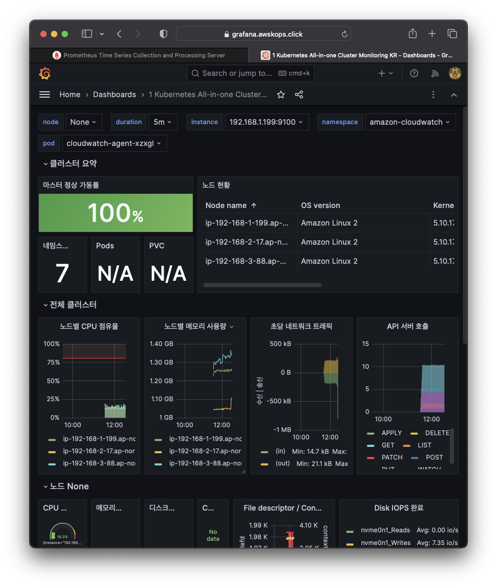
- AWS EKS CNI Metrics( 16032 ): 이 대시보드를 쓰려면 아래의 작업이 선행조건
# PodMonitor 배포
cat <<EOF | kubectl create -f -
apiVersion: monitoring.coreos.com/v1
kind: PodMonitor
metadata:
name: aws-cni-metrics
namespace: kube-system
spec:
jobLabel: k8s-app
namespaceSelector:
matchNames:
- kube-system
podMetricsEndpoints:
- interval: 30s
path: /metrics
port: metrics
selector:
matchLabels:
k8s-app: aws-node
EOF
# PodMonitor 확인
kubectl get podmonitor -n kube-system
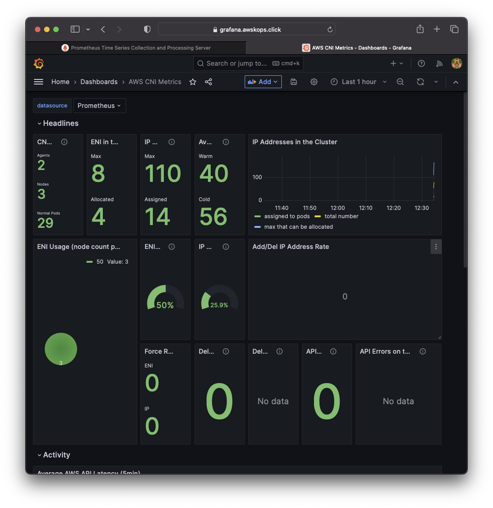
- NGINX application 모니터링( 12708 ):
- 6-5에서 부하 진행
- 반복 접속(부하)하여 metrics 변화 확인
- helm으로 설치시,
nginx-exporter옵션을 걸면, p8s 모니터링에 자동 등록 - 서비스 모니터 방식으로 nginx 모니터링 대상 등록을 위한 실습 파라미터
- export 는 9113 포트 사용
- nginx 웹서버 노출은 AWS CLB 기본 사용
# 모니터링
watch -d kubectl get pod
# 파라미터 파일 생성 :
cat <<EOT > ~/nginx_metric-values.yaml
metrics:
enabled: true
service:
port: 9113
serviceMonitor:
enabled: true
namespace: monitoring
interval: 10s
EOT
# 배포
helm upgrade nginx bitnami/nginx --reuse-values -f nginx_metric-values.yaml
# 확인
kubectl get pod,svc,ep
kubectl get servicemonitor -n monitoring nginx
kubectl get servicemonitor -n monitoring nginx -o json | jq
# 메트릭 확인 >> 프로메테우스에서 Target 확인
NGINXIP=$(kubectl get pod -l app.kubernetes.io/instance=nginx -o jsonpath={.items[0].status.podIP})
curl -s http://$NGINXIP:9113/metrics # nginx_connections_active Y 값 확인해보기
curl -s http://$NGINXIP:9113/metrics | grep ^nginx_connections_active
# nginx 파드내에 컨테이너 갯수 확인
kubectl get pod -l app.kubernetes.io/instance=nginx
kubectl describe pod -l app.kubernetes.io/instance=nginx
# 접속 주소 확인 및 접속
echo -e "Nginx WebServer URL = https://nginx.$MyDomain"
curl -s https://nginx.$MyDomain
kubectl logs deploy/nginx -f
# 반복 접속
while true; do curl -s https://nginx.$MyDomain -I | head -n 1; date; sleep 1; done
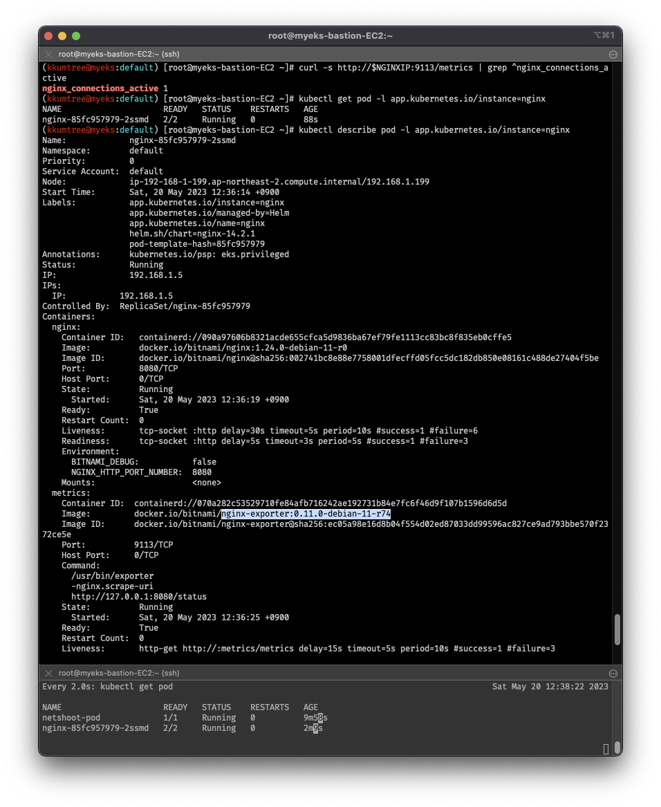
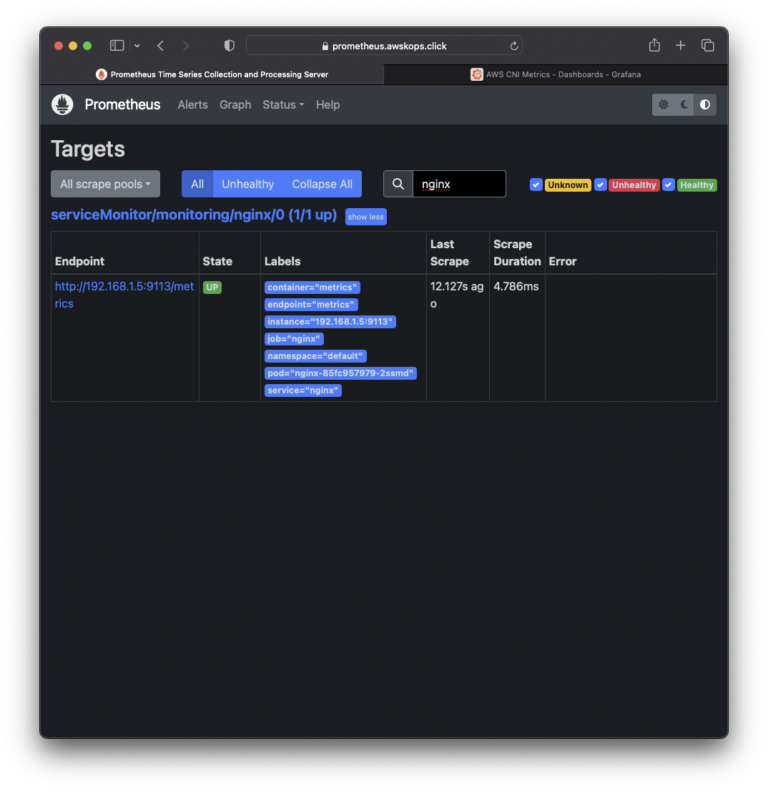
6-5. Grafana Alert
- Alert rules 및 Contact point 설정하여 테스트
- Alert rules : Alert 발생 조건 설정
- Contact point : Alert 발생시 알림을 받을 대상 설정 (Slack 웹훅 활용)
- Slack용으로 Notification policies의 기본 정책도 Slack으로 변경
- 이후에 NGINX 반복 접속으로 슬랙 채널 알람 확인
while true; do curl -s https://nginx.$MyDomain -I | head -n 1; date; sleep 1; done
- Contact point 설정 시, 지정 대상에게 제대로 멘션이 걸리지 않음을 확인.
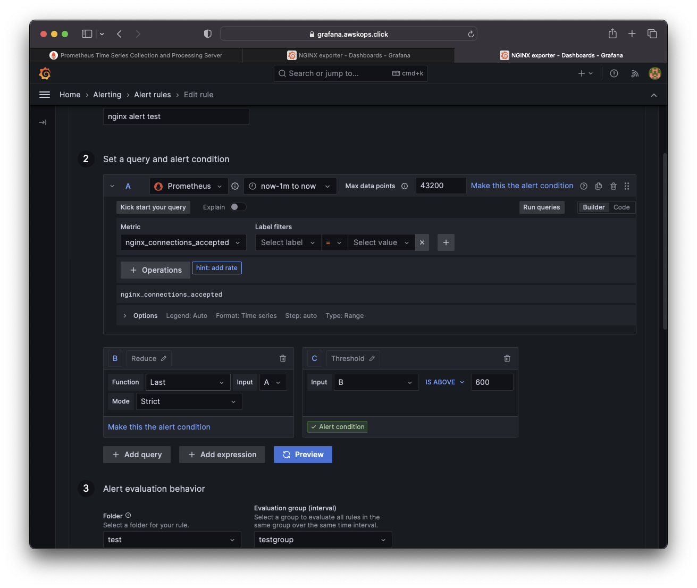
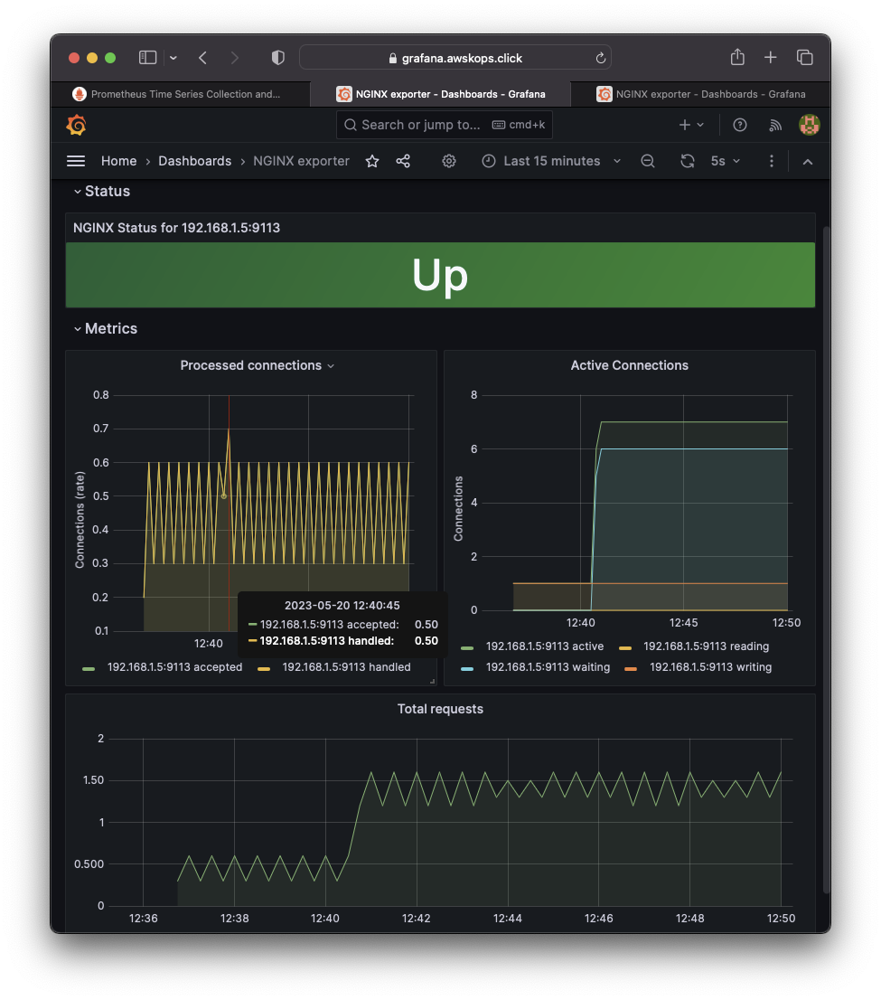
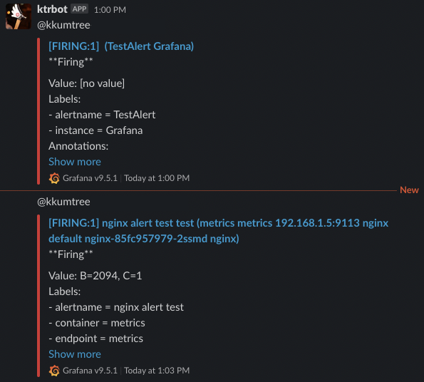
7. kubecost
- k8s 리소스별 비용 분류 대시보드, 처음 띄운 후 15분 정도 기다려야 데이터 표출
- kubecost의 경우, cloudformation 제거 후에도 데이터(dynamic-pvc)가 남아있어서 완전히 없애고자 웹 콘솔에서 볼륨 삭제를 진행
cat <<EOT > cost-values.yaml
global:
grafana:
enabled: true
proxy: false
priority:
enabled: false
networkPolicy:
enabled: false
podSecurityPolicy:
enabled: false
persistentVolume:
storageClass: "gp3"
prometheus:
kube-state-metrics:
disabled: false
nodeExporter:
enabled: true
reporting:
productAnalytics: true
EOT
# kubecost chart 에 프로메테우스가 포함되어 있으니, 기존 프로메테우스-스택은 삭제
# node-export 포트 충돌 발생
helm uninstall -n monitoring kube-prometheus-stack
# 배포
kubectl create ns kubecost
helm install kubecost oci://public.ecr.aws/kubecost/cost-analyzer --version 1.103.2 --namespace kubecost -f cost-values.yaml
# 배포 확인
kubectl get-all -n kubecost
kubectl get all -n kubecost
# kubecost-cost-analyzer 파드 IP변수 지정 및 접속 확인
CAIP=$(kubectl get pod -n kubecost -l app=cost-analyzer -o jsonpath={.items[0].status.podIP})
curl -s $CAIP:9090
# 외부에서 bastion EC2 접속하여 특정 파드 접속 방법 : socat(SOcket CAT) 활용
# 웹 브라우저에서 bastion EC2 IP로 접속
yum -y install socat
socat TCP-LISTEN:80,fork TCP:$CAIP:9090
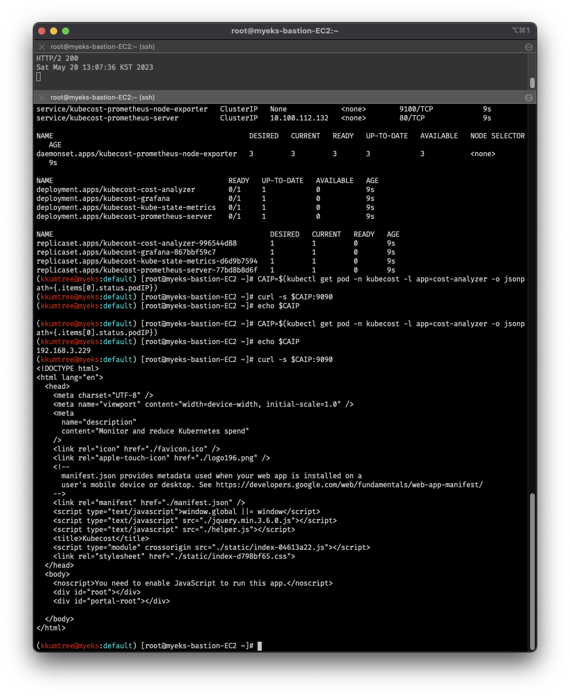
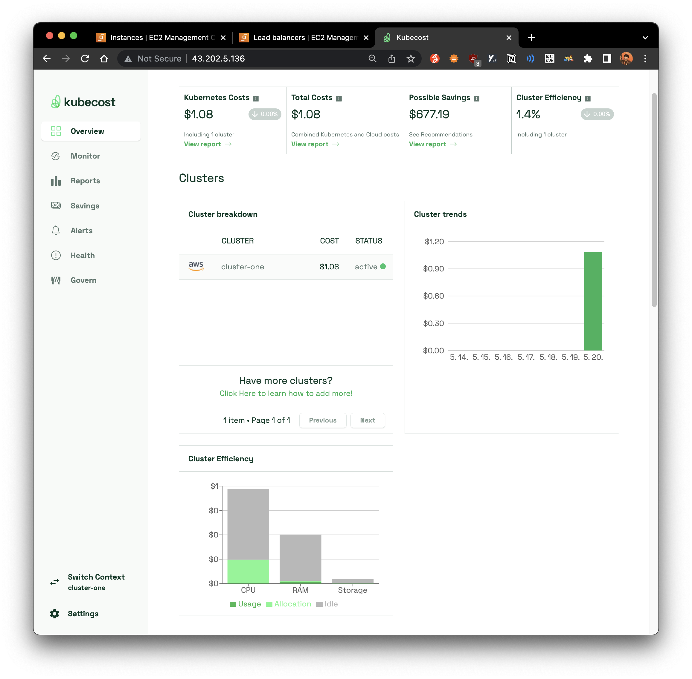
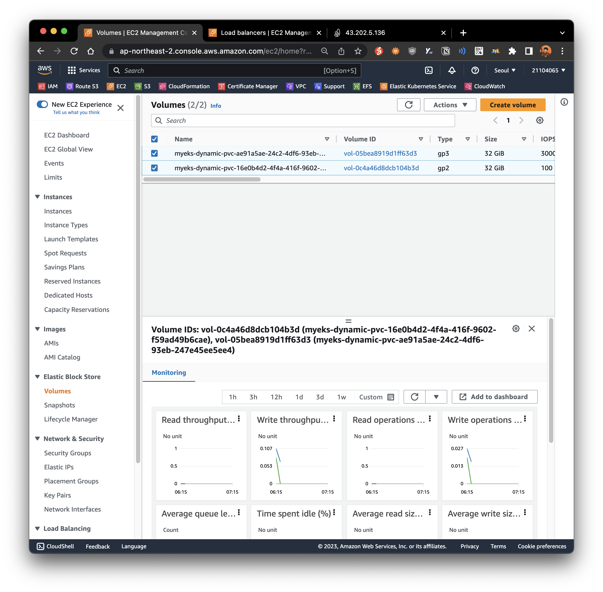